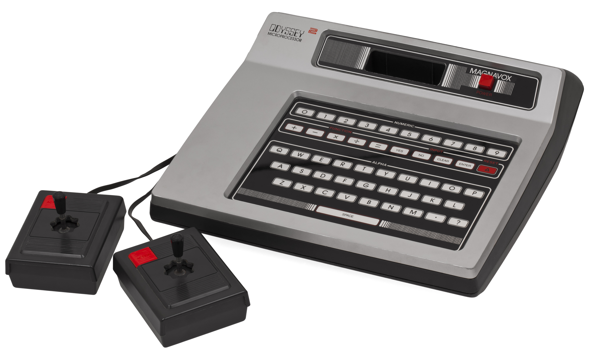
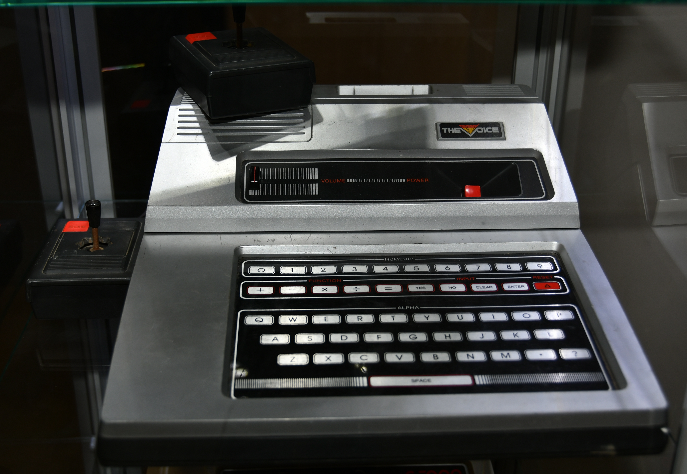

Magnavox Odyssey 2 / Philips Videopac G7000 (1978)
A game console that grew a full QWERTY keyboard, a speech-synthesis module, and a tactile board-game/video-game hybrid

Overview
Released in the US in September 1978 (and in Europe as the Philips Videopac G7000), the Magnavox Odyssey 2 was a second-generation cartridge console built around the Intel 8048 CPU and the Intel 8244 — the world's first programmable sprite-based graphics chip. Its defining departure from every rival was a full QWERTY-layout membrane keyboard integrated into the console body, marketed with phrases like "The Ultimate Computer Video Game System" and "a serious educational tool." The keyboard enabled educational games, option selection, and actual programming through the Computer Intro! cartridge (1979). Across its life it gained The Voice speech-synthesis module (1982) and the Master Strategy Series — three titles that fused a physical board game, with its own board and plastic pieces, to a video game played on the CRT. Roughly two million units were sold before the console was withdrawn in March 1984.
Deep dive
"Unlike any other system at that time," the Odyssey 2 shipped with a full alphanumeric membrane keyboard used for educational games, option selection, and programming. The bundled Computer Intro! cartridge taught simple computer programming by keyboard — a genuinely different HCI contract from the joystick-only or keypad-only consoles of the era, and the closest a home game console came to the home-computer thesis before the market decisively favored keyboards on real microcomputers. It is the museum's only programmable-keyboard console.
The Voice (1982) attached a speech-synthesis module that gave games talkative lines and sound effects (notably K.C.'s Krazy Chase! and Type & Tell), making the machine speak aloud — an early console speech synthesis that needed no speech cartridge. Unlike the later Intellivoice, games worked without it, which critics predicted would remove any incentive to buy the $100 module.
The Master Strategy Series — starting with Quest for the Rings! (1981) — paired a physical board game and its plastic pieces with the on-screen video game, a tactile/video hybrid the museum knows well from other eras. Combined with a keyboard and a wandering voice, the Odyssey 2 was an unusually embodied console.
Team & pioneers
- Roberto Lenarducci lead designer; gave the console its keyboard
- Ed Averett developer and early 8244 programmer; authored many Odyssey 2 titles
- Magnavox / North American Philips developer and manufacturer
- Philips European manufacturer (Videopac G7000)
Media
